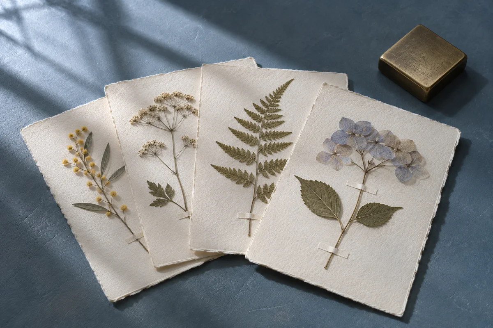
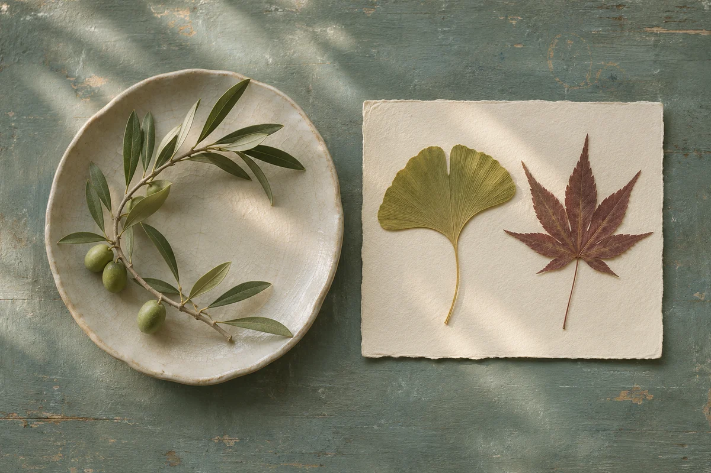

Sito dimostrativo
Laboratori botanici
Foglie a mezzavoce è un atelier botanico immaginario. I due incontri raccontati qui fanno parte del progetto dimostrativo e non sono aperti a prenotazioni.

Comporre con un solo ramo
Proviamo lo stesso ramo in un vaso alto e in una ciotola bassa. Osserviamo come cambia la sua linea, poi scegliamo pochi steli da accostare.
- Sul tavolo
- Un ramo, qualche stelo, un vaso alto e una ciotola bassa.
- Il gesto da provare
- Appoggia il ramo al bordo del recipiente e cambia la sua inclinazione. Guarda da quale lato la curva si legge meglio.
Il risultato Una piccola composizione costruita intorno alla curva del ramo.

Un erbario da tenere vicino
Disponiamo foglie già pressate su carta e annotiamo un dettaglio per ciascuna, come il margine, il colore o il disegno delle nervature.
- Sul tavolo
- Foglie già pressate, carta avorio e una matita.
- Il gesto da provare
- Metti due foglie una accanto all’altra. Prima di fissarle sulla carta, annota una differenza che si vede solo da vicino.
Il risultato Una pagina d’erbario con foglie e appunti scritti a mano.
Come si svolge un incontro
-
Osserviamo un esempio
Guardiamo una composizione da due lati o confrontiamo due foglie pressate. Ognuno sceglie un dettaglio da cui partire.
-
Facciamo due prove
Nel primo incontro cambiamo recipiente, tenendo lo stesso ramo. Nell’erbario proviamo due disposizioni prima di fissare le foglie sulla carta.
-
Confrontiamo le scelte
Alla fine mettiamo i lavori sullo stesso tavolo. Ciascuno racconta una scelta che ha cambiato il risultato, come l’inclinazione di uno stelo o la distanza tra due foglie.

Prima di mettersi al tavolo
Posso iniziare anche se non ho mai composto un vaso?
Sì. L’esercizio parte da un solo ramo. Prima si osserva come cambia quando lo inclini, poi si aggiunge uno stelo alla volta.
Come si preparano le foglie per l’erbario?
Nell’incontro immaginato le foglie sono già pressate. Se vuoi fare una prova a casa, scegli una foglia sottile e asciutta, mettila tra due fogli di carta assorbente e lasciala sotto un libro pesante finché è piatta e asciutta.
Una domanda sui laboratori?
Puoi provare il modulo con dati di esempio, senza inviare messaggi o prenotare un incontro.